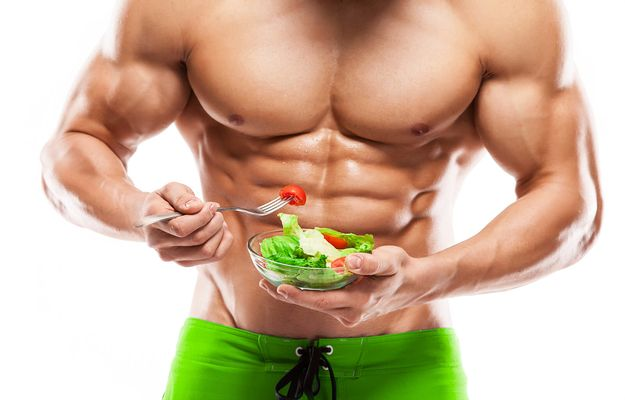

Informação de busca
PASCOAL ZAGE
Seja você um iniciante na musculação ou um fisiculturista experiente, nosso
site está aqui para fornecer informações valiosas e auxiliar no seu progresso.
Estamos comprometidos em ajudá-lo a alcançar seu potencial máximo e alcançar
os resultados desejados. Explore nosso conteúdo e comece sua jornada para uma
vida mais saudável, forte e bem-sucedida na musculatura.
Além disso, nosso site busca oferecer dicas práticas, respostas a perguntas
comuns e orientações para ajudar você a evitar erros comuns, alcançar seus objetivos
com segurança e manter a motivação ao longo do caminho. Acreditamos na importância de
personalizar o treinamento e a nutrição de acordo com as necessidades e motivadas
individualmente, levando em diferentes níveis de treinamento físico, exercícios e
históricos de treinamento.

